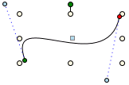
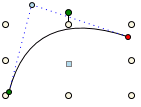

Drawing a Path Element
The path element allows you to draw a series of connected line and curve sections, consisting of segments that can be manipulated in multiple ways to form any number of shapes.
Select the topic related to your task:
Apply the Exclude Overlap Feature
- You are in Design or Test mode, you have two or more shape elements selected, and you want to create a path shape that excludes the non-intersecting portion of the first shape selected.
- From the canvas, select the elements you want to combine.
- On the Home tab, in the Selection group, click Exclude
 .
. - NOTE: The order you select the elements to combine, determines which element will be excluded to create the new path. The first element selected minus the second element becomes the new path element.
- A combined path element is created, minus the overlap area of the original two elements. The default Fill color of the new path is set to a gray tone.
- Click and drag the new element path to move and work with it on the canvas.
Apply the Subtraction Feature
- You are in Design or Test mode, you have two or more shape elements selected, and you want to create a path shape that excludes the non-intersecting portion of the first shape selected.
- From the canvas, select the elements you want to combine.
- On the Home tab, in the Selection group, click Subtraction
 .
. - NOTE: The order you select the elements to combine, determines which element will be excluded to create the new path. The first element selected minus the second element becomes the new path element.
Create a Union
- You are in Design or Test mode, and want to combine two or more elements to create a new, separate path element using the outside outline of the selected elements.
- From the canvas, select the elements you want to merge together.
- On the Home tab, in the Selection group, click Combine Union
 .
. - A new path element is created over the original combined elements.
- Click and drag the new element path to move it around the canvas.
Draw with the Path Element
- You are in Design or Test mode, have an open canvas and you want to draw a Path element.
- From the Home tab, click Path
 .
. - The mouse changes to a cross-hair cursor
 .
. - Click the canvas and drag the crosshairs to draw your first line segment.
- Click the canvas to change direction and add a new line segment. Continue drawing with the mouse until you have the desired shape or number of line segments.
- For each segment of the element, you have the following options available when you right-click the mid-segment icon
 .
. - Line – A line with no segments. The line section can be moved around, and it can be extended. This is the default option when you initially draw a path element on the canvas.
- Arc – The line section that crosses the mid-segment handle arcs out, and an arc width and an arc height handle are added to the mid-segment handle.
- Cubic Bezier – Creates two segment handles.
- Split – Splits the current section into two segments that can be dragged and manipulated.
- Double-click where you want the element to end.
To use keyboard shortcuts when drawing the segments, see Path Shortcuts.
Intersect Elements
- You are in Design or Test mode, and want to combine two or more elements to create a new, separate path element shaped by the overlapping portions of two elements.
- From the canvas, select the elements you want to merge together.
- On the Home tab, in the Selection group, click Combine Intersection
 .
. - A new path element shaped like the overlapping areas of the two elements is created.
- Click and drag the new path element to move and work with it on the canvas.
Modify an Arc Segment
- You want to modify the width, height, or both angles of an arc segment’s ellipse.
- Do one of the following:
- To modify both angle width and height of the arc - Place the mouse over one of the arc segment handles until the hand-cursor displays. Click-and-drag the segment until the desired height and width are achieved.
- To modify the width of the arc only - Place the mouse over the arc’s width handle until the hand-cursor displays. Press the A key and click -and-drag the handle until the desired width is achieved.
- To modify the height of the arc only- Place the mouse over the arc’s height handle until the hand-cursor displays. Press the S key and click-and-drag the handle until the desired height is achieved.
- To resize the width and height to square - Place the mouse over the arc’s width handle until the hand-cursor displays. Press the CTRL and click-and-drag the handle to resize the width and height to square.
- Repeat the steps as needed to achieve the appropriate arc segment.
Modify a Cubic Bezier
Cubic Bezier segments can be modified be moving its Start point (green) or its End point (red) by clicking and dragging them with the mouse. The two blue control of the cubic Bezier control the smooth curve separately.

- Click-and-drag the circular blue control handle until you have the desired curve.
Modify a Path Segment
A path consists of one or many segments. Each segment can be adjusted individually.
- To Move a Segment Point
- Place the mouse over the segment point on the path you want to move, when the hand-cursor display, click-and-drag the segment. The segment moves to the new location.
- To Move a Segment by increments of 45 Degree Angles
- Place the mouse over the segment point on the path you want to move at an angle. When the hand-cursor displays, press CTRL and then click-and-drag the segment. The segment moves in 45 degree increments to the new location.
- To Move a Mid-Segment Point
- Click-and-drag the mid segment point to move the entire segment, including the Start and End points.
- To Split a Segment into Two Segments
- Place the mouse over the mid-point segment until the hand-cursor displays over the mid-point segment.
- Press ALT + Click-and-drag the mid-segment point. The one segment is now two segments. A new segment point is created and dragged to the new position.
Modify a Quadratic Bezier
Quadratic Bezier segments can be modified be moving its Start point (green) or its End point (red) by dragging them with the mouse.

- Click-and-drag the blue control handle of the Quadratic Bezier until you have the desired curve.
Remove a Path Segment
- You are in Design or Test mode and have a graphic open.
- On the canvas, click the path element from which to want to remove a line segment.
- Navigate to the line segment you want to remove.
- Right-click the yellow intermediate control handle where the two adjoining line segments meet.
- Click Remove.
- The line is reconfigured to join to the two segments, making one line segment.
Related Topics
For background information, see the following:
- Element and Graphic Properties.
- Element Types.
For workspace overview, see Home Tab.